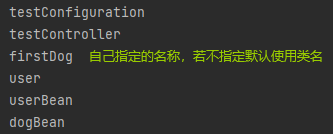

配置类相关
@Configuration
声明一个类为配置类，用于取代bean.xml配置文件注册bean对象。
@Configuration注解中含有@Component注解，所以被@Configuration标记的配置类会作为一个bean对象被加载到ioc容器中。
它通常搭配@Bean注解和@Scope注解使用。@Configuration有一个属性proxyBeanMethods，用于指定是否为懒加载，默认值为true。
proxyBeanMethods = true的情况下，保持单实例对象，在spring容器启动时就会创建bean对象。这种情况主要用在bean对象的依赖情况下，如果存在一个bean依赖另一个bean时，一般会采用Full模式。
proxyBeanMethods = false的情况下，不检查IOC容器中是否存在，而是简单的调用方法进行创建对象，无法保持单实例。当不存在bean对象的依赖问题时，会才有轻量级的配置。
测试代码如下：
@SpringBootApplication
public class TestSpringBootApp {
public static void main(String[] args) {
//获取ioc容器
ConfigurableApplicationContext run = SpringApplication.run(TestSpringBootApp.class);
Object dogBean = run.getBean(Dog.class);
System.out.println(dogBean);
User userBean = (User)run.getBean(User.class);
System.out.println(userBean);
System.out.println(userBean.getDog()==dogBean);
}
}User类：
@Data
@NoArgsConstructor
@AllArgsConstructor
@ToString
public class User {
private Integer id;
private String name;
private Integer age;
private String email;
private Dog dog;
}Dog类：
@Data
@NoArgsConstructor
@AllArgsConstructor
@ToString
public class Dog {
private Integer id;
private String name;
private Integer age;
}
testConfiguration类：
@Configuration(proxyBeanMethods = false)//多例模式
public class TestConfiguration {
public static int count = 0;
@Bean
public User userBean(){
System.out.println("User对象创建");
return new User(1,"dfy", 15, null, dogBean());
}
@Bean
public Dog dogBean(){
System.out.println("Dog对象第"+ (++count)+"次创建");
return new Dog(1,"六六",3);
}
}输出结果如下：
如果改成单例模式，即proxyBeanMethods = true，那么输出结果将变成：
@Bean
@Bean注解通常标记一个Supplier方法，用于声明一个bean对象的注册，默认的加载模式为饿汉单例。
使用@Bean声明一个bean：
@Configuration
public class TestConfiguration {
@Bean
public User userBean(){
System.out.println("User对象正在创建");
return new User(1,"dfy", 15, null);
}
}@SpringBootApplication
public class TestSpringBootApp {
public static void main(String[] args) {
//获取ioc容器
ConfigurableApplicationContext run = SpringApplication.runTestSpringBootApp.class);
Object user = run.getBean(User.class);
System.out.println(user);
}
}输出结果为：
@Bean注解含有如下属性：
public @interface Bean {
@AliasFor("name")
String[] value() default {};
@AliasFor("value")
String[] name() default {};
/** @deprecated */
@Deprecated
Autowire autowire() default Autowire.NO;
boolean autowireCandidate() default true;
String initMethod() default "";
String destroyMethod() default "(inferred)";
}- value和name
可以看到value和name两个属性是一个别名对，它们的作用是指定该bean的名称。
如果在使用时未指定bean的名称，默认使用带注解方法的名称；如果指定了，方法本身的名称就会被忽略。
@Configuration
public class TestConfiguration {
@Bean
public User userBean(){
System.out.println("未指定名称的User对象正在创建");
return new User(1,"dfy", 15, null);
}
@Bean("User01")
public User userBean01(){
System.out.println("指定名称的User对象正在创建");
return new User(1,"dfy", 15, null);
}
}@SpringBootApplication
public class TestSpringBootApp {
public static void main(String[] args) {
//获取ioc容器
ConfigurableApplicationContext run = SpringApplication.run(TestSpringBootApp.class);
//获取所有bean对象的名称
String[] beanDefinitionNames = run.getBeanDefinitionNames();
for(String s : beanDefinitionNames){
System.out.println(s);
}
}
}输出结果如下：
autowire
已弃用。
autowire确定自动装配状态，即该bean创建时是否使用它的setter方法对它的成员变量进行自动装配。
Autowire是一个枚举类，有三个值：- NO：不自动装配
- BY_NAME：根据名称自动装配
- BY_TYPE：根据类型自动装配
默认值是NO，即不自动装配。
autowireCandidate
autowireCandidate和配置文件bean标签的autowireCandidate属性一样，就是让其他的bean在自动注入时，是否会装配当前的bean。 默认值true。
@Configuration
public class TestConfiguration {
@Bean
public User userBean(){
return new User(1,"dfy", 15, null, null);
}
@Bean
public Dog dog1(){
return new Dog(1,"狗宝",5);
}
@Bean(autowireCandidate = false)//不作为自动注入的候选者
public Dog dog2(){
return new Dog(2,"六六",3);
}
}@Data
@NoArgsConstructor
@AllArgsConstructor
@ToString
@Component
public class User {
private Integer id;
private String name;
private Integer age;
private String email;
@Autowired
private Dog dog;
}@SpringBootApplication
public class TestSpringBootApp {
public static void main(String[] args) {
//获取ioc容器
ConfigurableApplicationContext run = SpringApplication.run(TestSpringBootApp.class);
Object userBean = run.getBean("userBean");
System.out.println(userBean);
}
}输出结果为：User(id=1, name=dfy, age=15, email=null, dog=Dog(id=1, name=狗宝, age=5))
如果取消dog2的autowireCandidate = false，spring容器会报NoUniqueBeanDefinitionException异常。
有趣的是，虽然spring容器启动时可以正常装配第二个Dog对象，但是idea会编译报错：
- initMethod和destroyMethod
用于指定bean的初始化和销毁方法。
@Configuration
public class TestConfiguration {
@Bean(initMethod = "userInit", destroyMethod = "userDestroy")
public User userBean(){
return new User(1,"dfy", 15, null, null);
}
}@Data
@NoArgsConstructor
@AllArgsConstructor
@ToString
@Component
public class User {
private Integer id;
private String name;
private Integer age;
private String email;
public void userInit(){
System.out.println("User init...");
}
public void userDestroy(){
System.out.println("User destroy...");
}
}输出结果：
@Value
常用于标记成员变量，注入外部化属性
@Value的三种用法：
- 注入普通属性
语法为@Value(…)，直接使用字面量即可- 注入配置文件
语法为@Value(“${…}”)，注入配置文件中写好的属性值- 注入表达式并运算
语法为@Value(“#{…}”)，写入spring框架的SpEl表达式即可
每个框架有自己的一套SpEl表达式，详情可以参考官方文档
代码示例如下：
@Data
@NoArgsConstructor
@AllArgsConstructor
@ToString
@Component
public class User {
@Value("10")//注入普通属性
private Integer id;
@Value("${user_name}")//注入外部配置文件
//application.yml中写入属性： user_name: user01
private String name;
@Value("#{2+1+3}")//注入表达式
private Integer age;
private String email;
public void userInit(){
System.out.println("User init...");
}
public void userDestroy(){
System.out.println("User destroy...");
}
}@Configuration
public class TestConfiguration {
@Bean
public User userBean(){
return new User(1,"dfy", 15, null);
}
}该bean的输出结果为：
User(id=10, name=user01, age=6, email=null)可以看到属性值已经成功注入，并且在new User对象时指定的默认值没有起到作用，被@Value的值覆盖掉了。
@Scope
@Scope通常和@Bean配合使用，用于指定该bean的作用域。它具有以下几种作用域：
- singleton 单例模式（默认值）
- prototype 多例模式
- request 每次http请求产生一个bean，该bean在本次HTTP request内有效
- session 每次http请求产生一个bean，该bean在本次HTTP session内有效
生命周期相关
@Lazy(true)
@Lazy表明一个bean是否被延迟加载，当@Lazy的值设定为true（默认值即为true）时，表明该bean被延迟加载。
- 标记在方法上，表示该方法被延迟加载
- 标记在@Component的类上或是@Component作为元注解的类上（其实就是标记在一个bean上），表示该bean被延迟加载
测试代码：
@Data
@AllArgsConstructor
@ToString
@Component
@Lazy//延迟加载
public class User {
private Integer id;
private String name;
private Integer age;
private String email;
private Dog dog;
public User() {
System.out.println("User 对象被创建");
}
}在spring启动时未看到User对象的创建：
@PostConstruct 和 @PreDestory
实现初始化和销毁bean之前进行的操作，只能有一个方法可以用此注释进行注释，方法不能有参数，返回值必需是void,方法需要是非静态的,不能抛出异常。
- @PostConstruct：在构造方法和init方法（如果有的话）之间得到调用，且只会执行一次。
- @PreDestory：注解的方法在destory()方法调用后得到执行。
代码示例：
@Configuration
public class TestConfiguration {
@Bean(initMethod = "init",destroyMethod = "destroy")
public Dog dogBean(){
System.out.println("Dog对象配置类中创建...");
return new Dog(1,"六六",3);
}
}@Data
@NoArgsConstructor
@AllArgsConstructor
@ToString
public class Dog {
private Integer id;
private String name;
private Integer age;
public void init(){
System.out.println("Dog对象初始化...");
}
public void destroy(){
System.out.println("Dog对象销毁...");
}
@PostConstruct
public void postConstruct(){
System.out.println("Dog对象初始化之前...");
}
@PreDestroy
public void preDestroy(){
System.out.println("Dog对象销毁之后...");
}
}spring启动后结果为：
bean对象相关
@Controller, @Service, @Repository, @Compnent
这四个注解的作用没有区别，都是声明一个bean对象注册到ioc容器中。但是为了程序可读性和开发规范，在使用时依然要按照java类的实际作用去使用。
在使用时只需要把它们标注在一个类上，spring容器启动时就会把对象创建好注入ioc：
@Data
@NoArgsConstructor
@AllArgsConstructor
@ToString
@Component
public class Dog {
private Integer id;
private String name;
private Integer age;
}也可以给这些注解一个值，作为bean对象的名称：
@Data
@NoArgsConstructor
@AllArgsConstructor
@ToString
@Component("firstDog")
public class Dog {
private Integer id;
private String name;
private Integer age;
}
@Named和@Inject
这两个注解是JSR-330的一部分。在Spring 3中，开始支持JSR-330的注解。这些注解在使用上和Spring的注解一样，所不同的只是需要额外的相关jar包。你可以使用下面的注解在spring 3应用中。
@Inject替代@Autowired来执行注入
@Named替代@Component来声明一个Bean在springboot项目中，使用这两个注解需要先引入依赖：
<dependency> <groupId>javax.inject</groupId> <artifactId>javax.inject</artifactId> <version>1</version> </dependency>
- @Named功能和@Component注解相同，它的值用于指定bean的名称，如果没有值默认使用类名作为bean名称。
- @Inject注解在spring环境下，和@Autowired是相同的。
@Autowired和@Resource
这两个注解的作用相同，用于bean对象的自动装配。
使用示例：
//@Autowired
@Resource
private Dog dog;下面详细说一下@Autowired的装配原理：
- @Autowired默认按照ByType类型进行装配。
- 若ByType类型匹配到多个bean，那么按照ByName类型装配：
- 若没有和@Qualifier搭配使用，默认按照变量名作为bean名称去匹配（例如上面Dog的例子，默认使用变量名dog作为bean名称），这种情况下若没有匹配到bean，会报NoUniqueBeanDefinationException异常。
- 若搭配@Qualifier使用，会按照@Qualifier注解指定的bean名称进行匹配，如果没有匹配到，会报NoSuchBeanDefinitionException异常。
- @Autowired有一个required属性，默认值为true，表示不接受空值，若没有匹配到bean报错。如果设置为false，表示允许null。
@Resource和@Autowired的区别：
@Resource默认按照Byname方式匹配bean，匹配失败会回滚到@Autowired。
可以手动指定bean,它有2个属性分别是name和type，使用name属性，则使用byName的自动注入，而使用type属性时则使用byType自动注入。
@Resource(name=”bean名字”)或@Resource(type=”bean的class”)
@Primary
自动装配时当出现多个Bean候选者时，被注解为@Primary的Bean将作为首选者，否则将抛出异常。
多线程
@Async
- 在方法上使用该@Async注解，申明该方法是一个异步任务；
- 在类上面使用该@Async注解，申明该类中的所有方法都是异步任务；
- 使用此注解的方法的类对象，必须是spring管理下的bean对象；
- 要想使用异步任务，需要在主类上开启异步配置，即，配置上@EnableAsync注解
https://blog.csdn.net/qq_44750696/article/details/123960134参数校验
@Valid,@Valided
https://blog.csdn.net/weixin_51439775/article/details/128386125
WEB相关
@RequestBody
获取request请求体中的内容，常用来处理content-type不是默认的application/x-www-form-urlcoded编码（form表单格式）的内容，比如说：application/json或者是application/xml等。一般情况下来说常用其来处理application/json类型。
@RequestBody注解可以解析请求体中json格式的数据，并将其封装到javaBean中。
测试：
使用postman发送请求，请求体中使用json格式字符串。
在后端代码可以用String来接收，接收结果是原json字符串：
@Controller
public class TestController {
@RequestMapping("/")
public String welcome(@RequestBody(required = false) String dog){
System.out.println(dog);
return "index";
}
}控制台输出：
{"id":"1","name":"六六","age":"3"}
也可以用对象来接收，接收结果是json字符串封装后的对象：
@Controller
public class TestController {
@RequestMapping("/")
public String welcome(@RequestBody(required = false) Dog dog){
System.out.println(dog);
return "index";
}
}控制台输出：
Dog(id=1, name=六六, age=3)
如果使用@RequestBody注解来接收form表单的请求（即application/x-www-form-urlcoded编码）会报415，并在控制台报出编码格式不支持的错误：Resolved [org.springframework.web.HttpMediaTypeNotSupportedException: Content type 'application/x-www-form-urlencoded;charset=UTF-8' not supported]
@RequestParam
用于将请求参数映射到控制层方法的参数上。
@RequestParam含有以下三个属性：
- value：设置传入的参数的名称，若不设置默认使用变量值。
- required：设置该参数是否必填。表示请求中一定要传入对应的参数，否则会报404错误，如果设置为false时，当请求中没有此参数，将会默认为null,而对于基本数据类型的变量，则必须有值，这时会抛出空指针异常。
- defaultValue：参数的默认值，如果请求中没有同名的参数时，该变量默认为此值。注意默认值可以使用SpEL表达式。
@PathVariable
处理请求的URL，把占位符绑定到controller的方法参数上。
该注解有两个属性： - value：设置匹配的占位符的名称，若不设置，默认使用参数名称匹配占位符。
- required：设置该参数是否必填，默认值为true，表示URL中必须含有匹配的占位符，否则将抛出异常。
使用方法例如：
@GetMapping({"/{page}/{pageSize}","/delete/{page}/{pageSize}"})
public String toEmpPage(HttpServletRequest request,
@PathVariable("page") Integer page,
@PathVariable("pageSize") Integer pageSize) {
//业务部分
}上述代码即是把URL中的{page}和{pageSize}分别绑定到方法参数中的page和pageSize上。
@RequestHeader
用于把请求头中的参数绑定到方法参数上。
它有三个属性，和@RequestParam注解完全相同。
@CookieValue
用于把请求中的cookie绑定到方法参数上。
它的属性同上。
@ModelAttribute
@ModelAttribute的作用是把数据添加进模型对象中，供前端页面渲染使用。它的用法有很多：
- 入参处使用
将@ModelAttribute注解标记在入参上，在渲染页面之前就会自动把标记的入参添加到模型对象中。
示例代码：
@Controller
public class TestController {
@RequestMapping("/")
public String welcome(@ModelAttribute("msg2")String msg2){
return "index";
}
}前端代码：
<form th:action="@{/}" method="post">
<label>
msg2:
<input type="text" name="msg2"/>
</label>
<input type="submit">
<p th:text="${msg2}"></p><!-- 前端提交表单后，后端再次返回该页面，并将上次输入的信息显示在此处 -->
</form>结果：
发送之前：
发送之后：
- 方法上使用
被@ModelAttribute注释的方法会在此controller的每个方法执行前被执行 ，如果有返回值，则自动将该返回值加入到ModelMap中。- 若注解没有返回值的方法，一般在方法体内部用model对象手动加入：
@Controller
public class TestController {
@ModelAttribute
public void before(@RequestParam String msg2, Model model){
model.addAttribute("msg2",msg2);
}
@RequestMapping("/")
public String welcome(){
return "index";
}
}- 若注解有返回值的方法，建议通过@ModelAttribute(value = “”)指定名称，若不指定，默认使用返回类型小写作为名称。
@Controller
public class TestController {
@ModelAttribute//不指定名称，属性名为返回类型小写，即string
public String before(@RequestParam String msg2){
System.out.println(msg2);
return msg2;
}
@RequestMapping("/")
public String welcome(){
return "index";
}
}@SessionAttributes
将ModelMap等方式传到前端的属性值共享到session中。
@SessionAttributes注解只能使用在类上，用于在多个请求之间传递参数，类似于Session的Attribute，但不完全一样，一般来说@SessionAttributes设置的参数只用于暂时的传递（存入sessionAttributeStore），而不是长期的保存，长期保存的数据还是要放到Session中。
有两种方式将ModelMap中的属性值共享到session中：
- 使用注解的value属性：可以通过属性名指定需要放到会话中的属性；
- 使用注解的types属性：还可以通过模型属性的对象类型指定哪些模型属性需要放到会话中。
@CrossOrigin
@RestController
@ControllerAdvice
@ControllerAdvice的作用也是声明一个控制层组件，通常用于全局异常处理、添加全局数据以及请求参数预处理。
全局异常处理
搭配@ExceptionHandler注解使用。@ExceptionHandler注解只有一个属性value，是一个Throwable类型的数组，它的作用是设置匹配异常的种类，当Controller层出现value数组内的异常时，将调用被@ExceptionHandler标记的方法。
方法的参数可以包括异常实例、HttpServletRequest、HttpServletResponse、Model等；返回值可以是void、Json（需要用@ResponseBody标记）、ModelAndView（可以添加数据、设置视图名称）、甚至是逻辑视图名。
示例代码：
@ControllerAdvice
public class TestControllerAdvice {
@ExceptionHandler(ArithmeticException.class)
public ModelAndView exceptionHandler(){
System.out.println("出现异常");
ModelAndView model = new ModelAndView();
model.addObject("msg2","出现异常！");
model.setViewName("index");
return model;
}
}@Controller
public class TestController {
@RequestMapping("/")
public String welcome(){
int a = 1/0;
return "index";
}
}浏览器访问该方法时触发ArithmeticException异常，返回页面如下：

添加全局数据
搭配@ModelAttribute注解使用。@ModelAttribute标记一个方法，该方法的返回值将作为全局数据，所有Controller层方法和页面都可以访问到。
示例代码如下：
controllerAdvice：@ControllerAdvice public class TestControllerAdvice { @ModelAttribute(value = "user")//model中的key public Map<String,String> GlobalConfig(){ HashMap<String,String> map = new HashMap<>(); map.put("username", "dfy"); map.put("age", "18"); return map;//model中的value } }controller:
@Controller public class TestController { @RequestMapping("/") public String welcome(Model model){ Map<String, Object> map = model.asMap(); Set<String> keySet = map.keySet(); Iterator<String> iterator = keySet.iterator(); while(iterator.hasNext()){ String key = iterator.next(); Object value = map.get(key); System.out.println(key + "=" + value); } return "index"; } }页面：
<p th:text="${user.username}"></p> <p th:text="${user.age}"></p>控制台输出为：
user={age=18, username=dfy}
页面输出为：请求参数预处理
搭配@InitBinder注解使用。被@InitBinder标记的方法，参数中必须要含有WebDataBinder，具体用法如下：@InitBinder public void initBinder(WebDataBinder binder){ binder.registerCustomEditor(String.class, new StringTrimmerEditor(true)); }通过WebDataBinder类的registerCustomEditor方法来注册请求参数的预处理器，它的方法参数为：
registerCustomEditor(Class<?> requiredType, PropertyEditor propertyEditor)
requiredType代表该预处理器处理的数据类型；propertyEditor代表预处理器，它的实现类有很多，这里不一一列举。
自定义属性编辑器可以通过继承java.beans.PropertyEditorSupport类并重写其setAsText方法实现，最后调用setValue(Object Value)方法完成转换后的值的设置。还有其他花式用法，具体可参见博客https://blog.csdn.net/wang0907/article/details/108357696